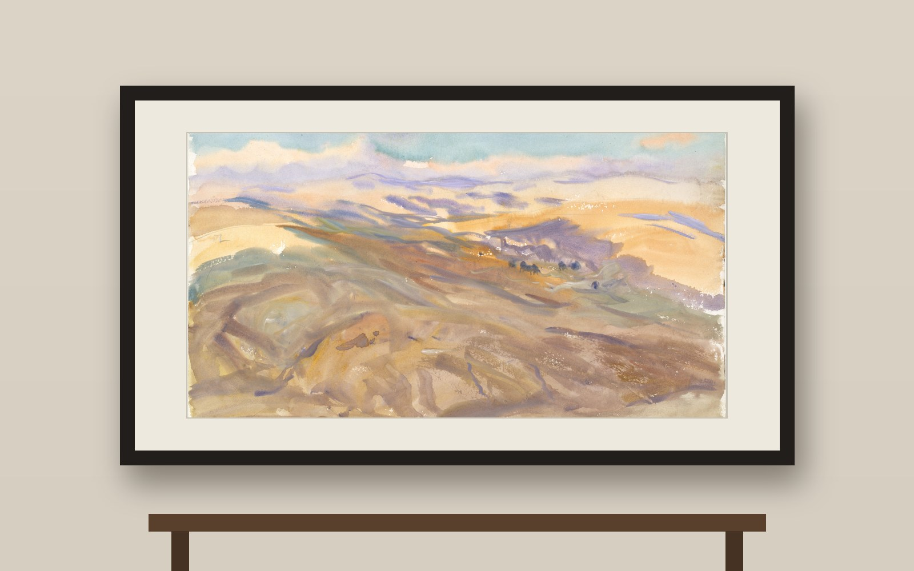
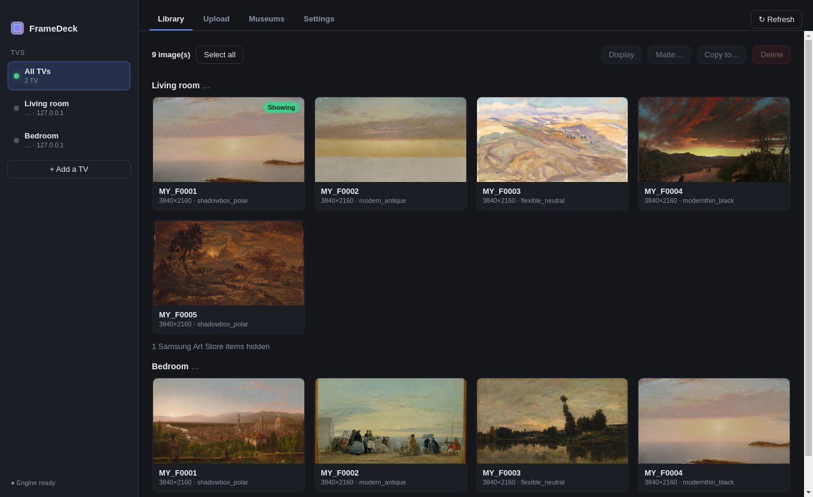
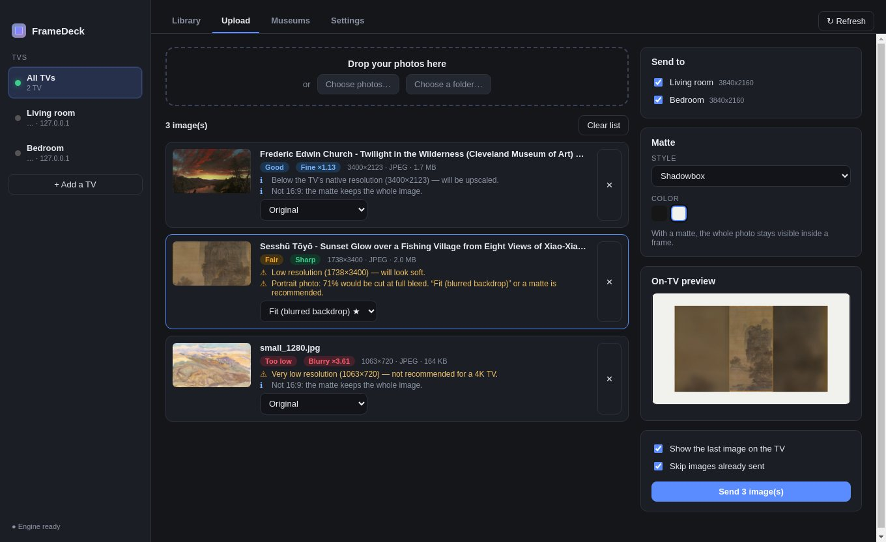
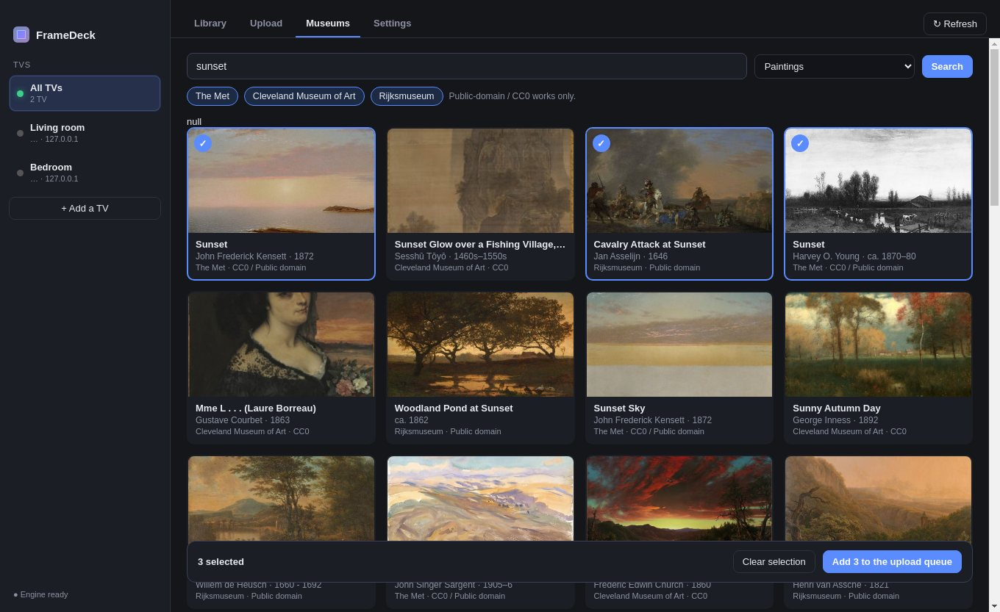
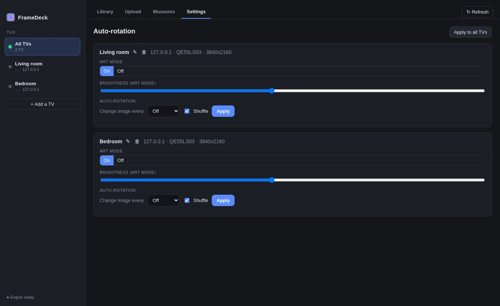

Upload many photos at once, with or without a mat. See what is on each Samsung The Frame, delete, copy between TVs, and browse free museum art. Free, and made by a Frame owner.
Téléversez plusieurs photos à la fois, avec ou sans passe-partout. Voyez ce qui est sur chaque Samsung The Frame, supprimez, copiez d’une TV à l’autre et parcourez de l’art de musée gratuit. Gratuit, fait par un propriétaire de Frame.
macOS 12+ · Apple Silicon or Intel · Free · Not affiliated with Samsung
macOS 12+ · Apple Silicon ou Intel · Gratuit · Non affilié à Samsung

Everything happens on your home network, directly between your Mac and your TVs. No account, no cloud.
Tout se passe sur votre réseau local, directement entre votre Mac et vos TV. Aucun compte, aucun nuage.
Drop one picture or a whole folder. Pick a mat style and colour, preview it, and send to one or several TVs in parallel.
Déposez une photo ou un dossier entier. Choisissez le style et la couleur du passe-partout, prévisualisez, puis envoyez à une ou plusieurs TV en parallèle.
Thumbnails of what is on each Frame, which one is showing now, and one view across all of them.
Les vignettes de ce qui se trouve sur chaque Frame, laquelle est affichée, et une vue commune à toutes.
Pick one picture per TV and display them all in one click. The app asks the TV to confirm. It never says “done” on a guess.
Choisissez une image par TV et affichez-les toutes d’un clic. L’app demande à la TV de confirmer. Elle ne dit jamais « fait » à l’aveugle.
Select several pictures and delete them, or copy them to other TVs. Duplicates are detected so nothing is sent twice.
Sélectionnez plusieurs images pour les supprimer ou les copier vers d’autres TV. Les doublons sont détectés : rien n’est envoyé deux fois.
Each photo is checked against the 3840×2160 screen, with a sharpness badge showing how much the TV will have to enlarge it.
Chaque photo est comparée à l’écran 3840×2160, avec une pastille de netteté qui montre de combien la TV devra l’agrandir.
Photos that are not 16:9 get a recommended treatment (crop, fit, or fit with a soft blurred background), with a live preview.
Les photos qui ne sont pas en 16:9 reçoivent un traitement recommandé (recadrage, ajustement ou fond flou), avec aperçu en direct.
Turn picture rotation on or off (3 minutes to a week, shuffled or in order), switch Art Mode and set brightness.
Activez ou coupez la rotation (de 3 minutes à une semaine, aléatoire ou dans l’ordre), le mode Art et la luminosité.
Rename each TV, see and change its IP address (handy when your router hands out a new one), or remove a TV.
Renommez chaque TV, voyez et modifiez son adresse IP (pratique quand le routeur en attribue une nouvelle) ou retirez une TV.
Real screens from the app. The artworks shown are public-domain paintings from the Met and the Cleveland Museum of Art, on two simulated Frame TVs.
De vrais écrans de l’app. Les œuvres affichées sont des peintures du domaine public du Met et du Cleveland Museum of Art, sur deux TV Frame simulées.




Header image: an illustration made for this page, with John Singer Sargent, “Sunset” (The Met, CC0). It is not a Samsung product photo.
Image d’en-tête : une illustration faite pour cette page, avec John Singer Sargent, « Sunset » (The Met, CC0). Ce n’est pas une photo de produit Samsung.
Browse public-domain and CC0 works from three museums, with no account and no API key. Tick the ones you like and send them to your TVs.
Parcourez des œuvres du domaine public et CC0 de trois musées, sans compte ni clé. Cochez celles qui vous plaisent et envoyez-les à vos TV.
Paintings from every era, Asian art, drawings. Open Access (CC0).
Peintures de toutes les époques, art asiatique, dessins. Open Access (CC0).
Open Access collection under CC0, including very high-resolution images.
Collection Open Access en CC0, avec des images de très haute résolution.
Dutch masters and more, public-domain works only.
Maîtres hollandais et plus, œuvres du domaine public seulement.
Browse everything page by page, or filter by artist, subject or place. Works are shrunk to fit a 4K screen before sending. The Art Institute of Chicago is not included: its image server blocks apps.
Parcourez tout page par page, ou filtrez par artiste, sujet ou lieu. Les œuvres sont réduites pour un écran 4K avant l’envoi. L’Art Institute of Chicago n’est pas inclus : son serveur d’images bloque les applications.
FrameDeck is not yet signed with a paid Apple Developer certificate, so macOS asks for a one-time confirmation.
FrameDeck n’est pas encore signée avec un certificat Apple Developer payant : macOS demande donc une confirmation, une seule fois.
.dmg from the Releases page (choose arm64 for Apple Silicon M1 to M4, the other one for Intel).Téléchargez le dernier .dmg sur la page Releases (arm64 pour Apple Silicon M1 à M4, l’autre pour Intel).The TV and the Mac must be on the same network, and the TV should be in Art Mode (or on). Check Settings → General → External Device Manager → Device Connection Manager → Access Notification: set it to “First time only” or “Always”.
La TV et le Mac doivent être sur le même réseau, et la TV en mode Art (ou allumée). Vérifiez Réglages → Général → Gestionnaire de périphériques externes → Gestionnaire de connexion d’appareil → Notification d’accès : « Premier accès uniquement » ou « Toujours ».
Yes. If it saves you time and you want to say thanks, there is a coffee button below. Nothing is locked behind it.
Oui. Si elle vous fait gagner du temps et que vous voulez dire merci, il y a un bouton café plus bas. Rien n’est verrouillé derrière.
Photos go straight from your Mac to your TVs over your home network. The only internet traffic is the Museums tab, which downloads artworks from the museums’ public servers.
Les photos vont directement de votre Mac à vos TV sur votre réseau local. Le seul trafic internet est l’onglet Musées, qui télécharge des œuvres depuis les serveurs publics des musées.
No. FrameDeck talks to the TV directly on your network.
Non. FrameDeck parle directement à la TV sur votre réseau.
The TV may be in deep standby, or your router gave it a new IP address. Turn it on, press Refresh, and if needed edit the IP in the TV’s edit dialog. Reserving a fixed address for the TV in your router prevents it.
La TV est peut-être en veille profonde, ou le routeur lui a donné une nouvelle adresse IP. Allumez-la, actualisez et, au besoin, modifiez l’IP dans la fenêtre de modification de la TV. Réserver une adresse fixe dans le routeur évite le problème.
Not at the moment. It is a Mac app.
Pas pour l’instant. C’est une app Mac.
JPEG, PNG, HEIC, WebP, TIFF, BMP and GIF (first frame). Non-native formats are converted automatically.
JPEG, PNG, HEIC, WebP, TIFF, BMP et GIF (première image). Les formats non natifs sont convertis automatiquement.